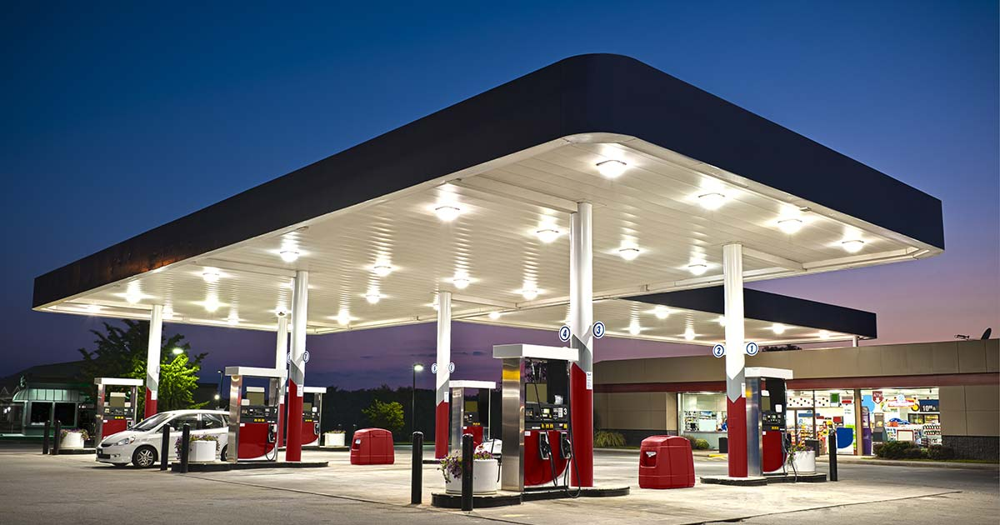
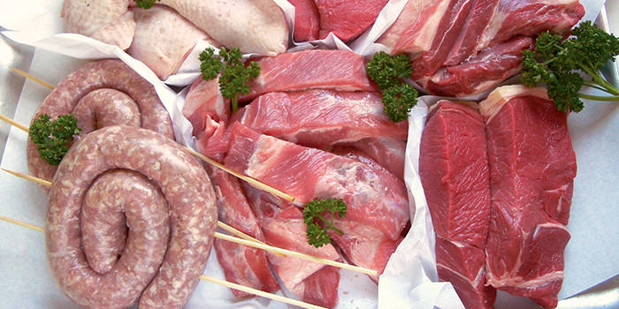
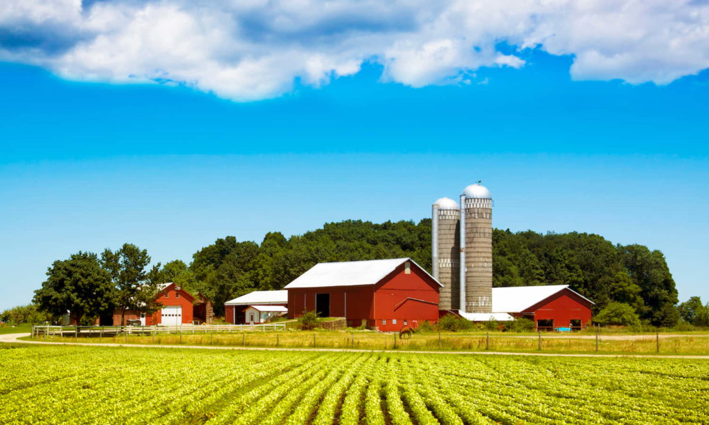
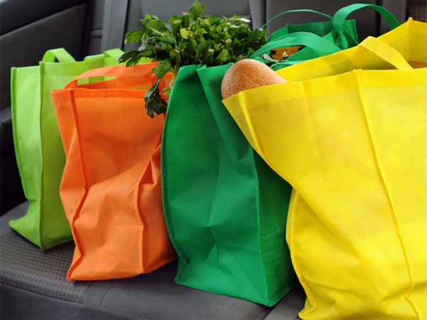
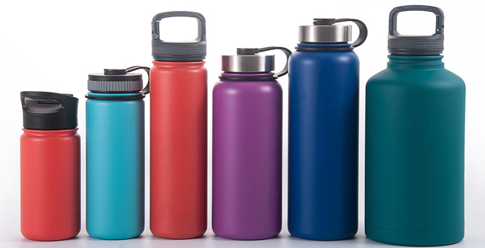
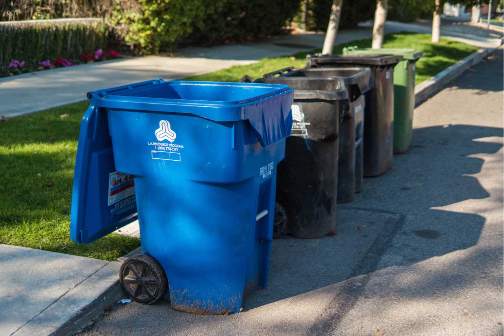
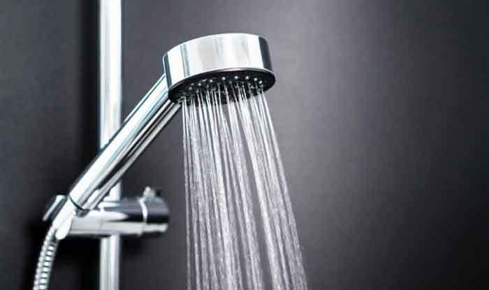
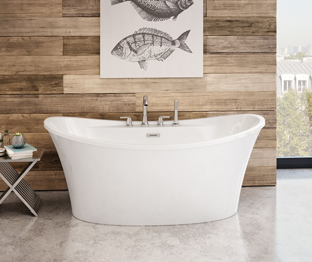
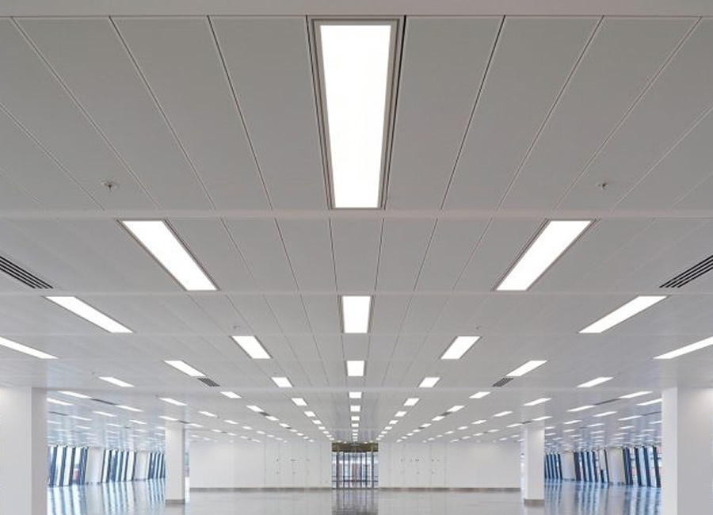
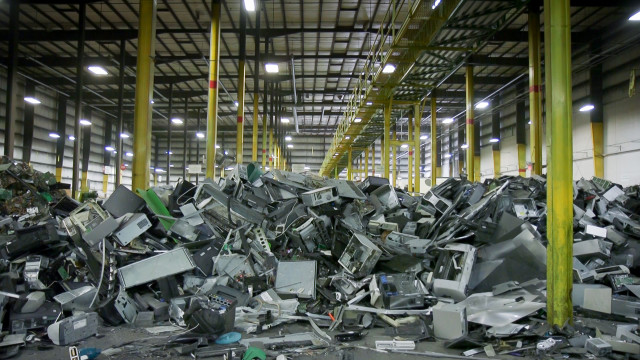

The scoring system is based on the overall environmental impact of your answer to the questions.
Impacts on climate change, biodiversity, food chain, and the overall health of the environment has been taken into
consideration.
The score is in no means scientifically proven. It should only be used as a guideline.
Transportation Assessment
Question 1: Which type of car do you drive?

Explanation
Goal 13: Take urgent action to combat climate change and its impacts:
Currently, greenhouse gas emissions across the world are causing the global temperature to steadily
increase. This has had a profound negative impact on climate, agriculture,
biodiversity, sea levels, and polar ice. If the increase in temperature this century exceeds 2 degrees
celsius, there will be catastrophic consequences for the Earth. The 2015
Paris Agreement aims to prevent this by having each participating country quickly and thoroughly reduce
their greenhouse gas emissions, which traps heat within the Earth’s
atmosphere, heating the planet. One such emission is carbon dioxide. Automobile emissions are responsible
for roughly 16% of global carbon emissions as of 2010. As a result of
When vehicle engines burn gas or diesel for fuel, carbon dioxide gas is produced. Driving less, especially
in short, walkable distances, is one of the best ways to reduce carbon
dioxide emissions and work towards preventing global warming and climate change. Additionally, fossil fuels
are non-renewable resources that are derived from crude oil within the Earth. Driving more
directly leads to an increased consumption in crude oil products,
requiring more to be extracted from the Earth. Resultantly, the limited supply of this resource decreases.
In addition, methods of extraction are usually damaging to local
ecosystems. For example, the oil tar sands in Alberta require massive local excavation, disrupting native
biodiversity.
Question 2: How many kilometers do you travel on public transport?
kilometers annually:
Explanation
Goal 13: Take urgent action to combat climate change and its impacts:
Currently, greenhouse gas emissions across the world are causing the global temperature to steadily
increase. This has had a profound negative impact on climate, agriculture,
biodiversity, sea levels, and polar ice. If the increase in temperature this century exceeds 2 degrees
celsius, there will be catastrophic consequences for the Earth. The 2015
Paris Agreement aims to prevent this by having each participating country quickly and thoroughly reduce
their greenhouse gas emissions, which traps heat within the Earth’s
atmosphere, heating the planet. One such emission is carbon dioxide. Automobile emissions are responsible
for roughly 16% of global carbon emissions as of 2010. As a result of
When vehicle engines burn gas or diesel for fuel, carbon dioxide gas is produced. Driving less, especially
in short, walkable distances, is one of the best ways to reduce carbon
dioxide emissions and work towards preventing global warming and climate change. Additionally, fossil fuels
are non-renewable resources that are derived from crude oil within the Earth. Driving more
directly leads to an increased consumption in crude oil products,
requiring more to be extracted from the Earth. Resultantly, the limited supply of this resource decreases.
In addition, methods of extraction are usually damaging to local
ecosystems. For example, the oil tar sands in Alberta require massive local excavation, disrupting native
biodiversity.
Question 3: How many kilometers do you drive in a private vehicle per year?
kilometers driven annually:
Explanation
Goal 13: Take urgent action to combat climate change and its impacts:
Currently, greenhouse gas emissions across the world are causing the global temperature to steadily
increase. This has had a profound negative impact on climate, agriculture,
biodiversity, sea levels, and polar ice. If the increase in temperature this century exceeds 2 degrees
celsius, there will be catastrophic consequences for the Earth. The 2015
Paris Agreement aims to prevent this by having each participating country quickly and thoroughly reduce
their greenhouse gas emissions, which traps heat within the Earth’s
atmosphere, heating the planet. One such emission is carbon dioxide. Automobile emissions are responsible
for roughly 16% of global carbon emissions as of 2010. As a result of
When vehicle engines burn gas or diesel for fuel, carbon dioxide gas is produced. Driving less, especially
in short, walkable distances, is one of the best ways to reduce carbon
dioxide emissions and work towards preventing global warming and climate change. Additionally, fossil fuels
are non-renewable resources that are derived from crude oil within the Earth. Driving more
directly leads to an increased consumption in crude oil products,
requiring more to be extracted from the Earth. Resultantly, the limited supply of this resource decreases.
In addition, methods of extraction are usually damaging to local
ecosystems. For example, the oil tar sands in Alberta require massive local excavation, disrupting native
biodiversity.
Question 4: On average, how many kilometers do you fly each year?
kilometers flown annually:
Explanation
Goal 13:
Airplanes are massive producers of carbon dioxide. In 2018, global carbon dioxide from airplanes was 905
millions tons. In order to halt global warming and climate change, one should avoid excessive flying.
Dietary Assessment
Question 5: How many times do you eat red meat per week?

Times eaten:
Explanation
Goal 13:
A large proportion of greenhouse gas emissions comes from food production, especially meat and dairy that
are associated with much higher carbon and methane emissions, alongside a higher water and energy
consumption rate than plant-based food. Red meat in particular is much less efficient to produce than
chicken. Consequently, the greenhouse gases from livestock contribute to global warming.
Question 6: How often do you spend on food from restaurants and takeout per week?
Number of times:
Explanation
Goal 13: Food bought in restaurants has a wider footprint than food you buy to cook at home because of the
emissions
associated with heating, lighting, and cooking for your meal. Food from takeout had additional packaging and
additional transportation emissions associated with delivery.
Consumerism Habits Assessment
Question 7: Apart from essential goods like groceries, how many times do you go shopping
per
month?
Number of times:
Explanation
Goal 13,14,15:
Consumerism is perhaps one of the most impactful lifestyle choices on the environment. First off, buying new
products uses up the finite resources on and within the Earth. Additionally, energy and land must be
dedicated for the production of consumer goods. Various stages of the supply chain produce carbon emissions
and waste, such as transportation and packaging for example. If consumers tend to discard and purchase
products frequently because of poor habits or the product is disposable in nature, then waste in landfills
can increase significantly. The more land and resources taken away for production, the greater the strain on
biodiversity and the ecosystem. Sustainable consumer habits are essential to reduce waste, greenhouse gas
emissions, overuse of natural resources, and the destruction of ecosystems.
Question 8: On average, how often do you buy local produced food per month?

Number of times:
Explanation
Goal 13: Buying local produced food can generally result in a lower carbon footprint. Importing, whether via
air, sea or road, all release massive amounts of greenhouse gases. It all depends on how it’s produced and
packaged, but it is more likely to have a lower environmental footprint. Food grown in local farms is very
sustainable and it can be vital for developing countries.
Question 9: Do you use reusable shopping bags?

Explanation
Goal 14, 15: Making plastic bags requires the burning of fossil fuel, cutting down of trees, and in some
cases, the use
of unfair labour practices. Reusable bags save both plants and animals, and help cut down on the emission of
dangerous greenhouse gases.
Question 10: Do you use reusable water bottles?

Explanation
Goal 13, Goal 15: Using plastic single use water bottles are detrimental to the environment in both the
production process and the disposal process. In the production process, fossil fuels, a nonrenewable form of
energy, is used to produce plastic. In the disposal process, these plastic bottles often take thousands of
years to decompose and leave microplastics that can enter food chains. This is especially present in the
ocean and has proven to be deadly to the aquatic ecosystem. Using reusable water bottles eliminates the
issue of production and disposal of plastic.
Question 11: On a scale of 1 - 4, how intricate is the recycling system in your
municipality? (1
being no sorting, 4 being extremely specific sorting)

Explanation
Goal 14, 15:
Proper waste management techniques prevent harmful substances from entering the food chain. The substances are
not much to the lower level organisms, but to the upper organisms, the consequence is exponentially larger.
This affects both life on land and life in water since waste can travel with wind and water.
Question 12: How long are your average showers in minutes?

Length of shower:
Explanation
Goal 13:
With clean drinking water still not readily available to everybody on Earth, long showers and full baths are a
significant waste of water. In an average shower, 10 liters of water is used per minute, and an average human
only drinks 3 liters. This means that an extra minute of shower can help three more people live without the
fear of waterborne diseases or dehydration. Water purification plants also consume lots of energy, both
renewable and nonrenewable, and release chemicals and greenhouse gases in the process.
Question 13: On average, how many times do you take a bath (fill the bathtub) per week?

Number of times:
Explanation
Goal 13:
With clean drinking water still not readily available to everybody on Earth, long showers and full baths are a
significant waste of water. In an average shower, 10 liters of water is used per minute, and an average human
only drinks 3 liters. This means that an extra minute of shower can help three more people live without the
fear of waterborne diseases or dehydration. Water purification plants also consume lots of energy, both
renewable and nonrenewable, and release chemicals and greenhouse gases in the process.
Question 14: Do you regularly turn off your lights and appliances (instead of leaving
them on)?
Explanation
Goal 12, Goal 13: 19 million UK homes have poor levels of energy efficiency. Lighting can account for up to
15% of your home electricity bill, so you can turn off the lights when you don’t need them to reduce
electricity usage. Also, don’t leave the devices on standby because some of them consume quite a lot of
energy, which increases the carbon footprint. Although many power plants are switching away from coal and
moving towards nuclear and renewable, there are still a considerable amount of coal power plants around the
world that release tons of carbon dioxide and other waste into the atmosphere.
Question 15: Do you use LED lights at home?

Explanation
Goal 13: By making your home more efficient (i.e. finding ways to waste less energy) you can reduce your
carbon footprint. LEDs use much less energy than incandescent bulbs because diode light is much more
efficient, power-wise, than filament light. LED lights use more than 75% less energy than incandescent
lights. A bright LED bulb uses only 11 to 12 watts while creating a light output comparable to a 50-watt
incandescent bulb.
Question 16: How many new electronic devices did you buy In the last 12 months (for
example: mobile phones, TV, laptop, PC)?
Number of new devices:
Explanation
Goal 13: The production process for new electronic devices (even ‘efficient’ appliances) requires massive
amounts of energy and resources. Reusing old ones also diverts waste from landfill. E-waste can be produced
for manufacturing the electronic devices, which pollutes the environment by creating lots of carbon
emissions.
Question 17: How do you get rid of old electronics (including phones, laptops, batteries,
lightbulbs, etc.)

Explanation
Goal 13, Goal 14, Goal 15: There are valuable materials that are polluting in the extraction process from
Earth. Ranging from gold in connectors to lithium in batteries, these rare Earth metals are often
nonrenewable. Proper e-waste processes can not only decrease the amount of new materials extracted from the
earth by reusing the old, but also decrease pollution from improper disposal. Mercury is an especially
damaging pollutant. When leaked to lakes, it can kill entire populations of water organisms.
Hit the button below for a detailed report of your responses.